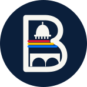
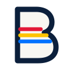

Brand guide
BRIDGE the District
Two identities work together. BRIDGE the District is the permanent institution: the monogram and wordmark never carry a season. The BRIDGE Line is the seasonal programming and fundraising campaign, and its season always appears as a separate tag.
The monogram
A B built from Washington, DC: the Capitol dome in the upper bowl, bridge arches in the lower bowl, and three routes, red, yellow and blue, crossing at its center. The routes are the three fellowship tracks: Leadership, Community and Opportunity.
 Full color
Full color Reversed
Reversed
Circular
Simplified (small sizes, favicon)
Monochrome whiteLockups
BRIDGE the DistrictBRIDGE the DistrictCampaign lockup, used only for seasonal programming and fundraising:
Core colors
For small red text on light backgrounds use #B5102A, and for small text on blue use #0062D9, so contrast meets WCAG AA.
Route colors (navigation only)
These label industry pathways and maps. They are never used in the logo or as a primary brand color.
Type
Headings
Montserrat
Weights 600 to 900.
Text
Inter
Weights 400 to 700. VT323 appears only on transit display boards in The BRIDGE Line experience.
Please don't
- Add a season or year to the monogram or wordmark
- Recolor the three routes or change their order
- Use route colors as brand colors
- Stretch, rotate or outline the monogram
- Place the full-color monogram on a busy photo; use the reversed or circular version
- Use the full monogram below 32 pixels; use the simplified version
Downloads
Monogram (SVG)Reversed (SVG)Circular (SVG)Simplified (SVG)Navy (SVG)White (SVG)Monogram (PNG, 1024)Circular (PNG, 512)Email signature